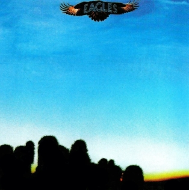

My Top 10 Favorite Eagles Songs
The Eagles is my favorite band of all bands. It wasn't easy to come to that, especially
as I enjoy a lot of music from across the world-wide spectrum of music. In Junior High I started
listening almost exclusively to "Oldies Radio." This was back when said radio station played music from the late
1940s up through the very early 1980s. You got a big selection there and I got to hear and experience a lot
alongside a healthy diet of country/western music coming from my Dad. I heard so many groups and so many great songs.
In this four-decade-deep mix was a group that hit differently. "Who was that," i'd ask as the songs went by. It was them. The Eagles.
And as much as I enjoyed the other music I heard, I felt a special resonation with their tunes. There was a sense of
identity and journey and love and living that felt like a reflection or extension of my own very young and inexperienced
experience. This is just a glance at what music gives us all - comfort and affirmation for when we feel alone in our feelings.
That one song comes on and something in the lyrics or music say "No, you're not alone, and you're not the first to feel this way."
Most of all, their music took me places where my imagination could run wild and I could reflection
on my identity and my progression from youth into young adulthood. I journed through amber canyons with Glenn and raced down neon midnight streets with Joe.
Later on, the Eagles comforted me in heartache, celebrated with me in victory, and even today still brings me into those moments of introspection and internal exploration.
A thousand other people will say the same about a thousand other groups and as many songs, but for me it's the Eagles, and i'm glad to share
this with you. Please note that this is a product of my opinion alone. I'd love to hear your favorite Eagles tracks.
Number 10 - "Ol' 55"
 Album: On the Border (1974)
Album: On the Border (1974)
My Thoughts: Tom Waits wrote it, but the Eagles made it sing. Here's an early 70s version of the sort of
sugar-sweet love songs you hear on the radio today and always. What an enchanting and intoxicating image - driving
away from your girl's house early in the morining, the sun coming up, the traffic honking around you, and just wishing
you'd stayed a little bit longer. So deep in love you're a danger to other motorists.
Listen Here
Number 9 - "Try and Love Again"
 Album: Hotel California (1976)
Album: Hotel California (1976)
My Thoughts: Here's one of those songs that held my hand and my heart during seasons of ache and hurt.
Not just in relationships, but even when I was struggling with finding the courage to send out another
job application or try another attempt at a difficult test.
I came back to that classic lyric from the chorus, "Would I lose or win, if I try and love again?
Listen Here
Number 8 - "Best of My Love"
Album: On the Border (1974)
My Thoughts: The Eagles have recorded songs across a whole host of genres. From American rockers and blues tunes to funk to soul to soaring ballads like this one.
But it's never quite like it seems with Don Henley and Glenn Frey. The sound and the feel of the music
give the impression that this will be a classic love song about the "best" aspects of being in love. Listen in. It's love on the rocks, and this song tells the story
of a relationship that is failing even though they gave and continue to give it ... the best of their love.
Listen Here
Number 7 - "Witchy Woman"

Album: Eagles (1972)
My Thoughts: Don and Glenn claimed they wrote this song, in part, with inspiration from the music of the Native Americans.
You hear that come through in the big drums of the intro alon with those wide, ambigious ("exotic") chords throughout.
(They're just plain power chords, but sort of modeled in this ancienty war-cry framework. And it works for me.) The driving
rhythm soon departs for a minimal groove that sets the stage for a song of praise to this
other-worldly woman in the night. See how high she flies.
Listen Here
Number 6 - "I Can't Tell You Why"
 Album: The Long Run (1979)
Album: The Long Run (1979)
My Thoughts: Her name was Grete, and I loved her for the majority of my senior year of college. She said she loved me, too,
but never gave herself to me. That is, never gave herself into a relationship. Close as I was to the white-hot heat of that
flame of young love, it's no surprise I was burned - badly - when she left. This song was a salve on those burns. Even thoguh the song hangs on an element of anti-resolution,
there was comfort in Timothy B. Schmidt's lyrics. Just like him, "I can't tell you why" we made it harder than it had to be.
Listen Here
Number 5 - "Hotel California"
Album: Hotel California (1976)
My Thoughts: Few songs carry such power, legacy, and legend as "Hotel California." In every way
it deserves to be right "up there" with the likes of "Stairway to Heaven," "Another Brick in the Wall" and "Won't Get Fooled Again." This song also represents
the deep disfunction that was happening in the band (even at the height of their success) that eventually
led to their dissolution. All the pieces are here at maximum force. The harmonies. The instrumentation.
The galaxy-shaking guitar shoot-out at the end. The narrative adventure of crossing the desert at night. It's the whole package. A perfectly balanced meal.
Think of how many have ventured that "dark desert highway" in their lives, and how many have yet to tarry there on the bar-lines of this song!
Listen Here
Number 4 - "Take It to the Limit"
 Album: One of These Nights (1975)
Album: One of These Nights (1975)
My Thoughts: Growing up in Detroit, Glenn Frey was born into the musical traditions of Motown and R&B. In his own words,
he wanted to write something as a tribute to one of his favorite songs, "If You Don't Know Me By Now," written by
Kenny Gamble and Leon Huff and famously (everlastingly famously) recorded by Harold Melvin & the Blue Notes.
You can hear the tribute most plainly in the string arrangement right at the top of the track. I'll also love this song forever
as when she was young, my daughter Hannah would sing "Take it to the Lemon one more time. This is one of those
sing-it-at-the-top-of-your-lungs-on-a-late-night-drive songs, and how can you resist when it hits that iconic lyric, "So put me on a highway..."
Listen Here
Number 3 - "Tequila Sunrise"
 Album: Desperado (1973)
Album: Desperado (1973)
My Thoughts: Glenn tells us that the concept for this song came as he was sitting on a couch strumming his guitar and his fingers found
this sort of Mexican/Flamenco riff. That chord with its drifting suspension takes you right into the heart of
what defined so much of the music of the early 1970s. Soft. True. Introspective. Searching, just like the "lonely boy" in this songs
is searching for the real thing.
Listen Here
Number 2 - "Peaceful Easy Feeling"
Album: Eagles (1972)
My Thoughts: "It all started" with "Take It Easy," but this song was the 2 of the 1-2 punch that put the Eagles on the board.
Here the subject matter was a direct response to the angst and anxiety of the time. The 70s weren't perfect,
but here at the top of the decade (having just escaped the rancor of the late 60s), this song hopes for the best in the days ahead.
This hope isn't distant to the listener, but is given a body and a form in the dark-skinned body of this desert beauty,
complete with sparkling earrings a billion stars can't contend with. But like the hope for future good, there is a sober check in that
ringing line, "This voice keeps whisperin' in my other ear, telling me i'll never see you again."
Listen Here
Number 1 - "Lyin' Eyes"
Album: One of These Nights (1975)
My Thoughts: Do you remember Grete from the "I Can't Tell You Why" entry?
I remember one rainy Sunday evening we were driving back to campus and I played this song for her. After it ended I said, "That's my favorite Eagles" song.
She was quiet for a moment then responded, "Why so? Isn't that song about cheating on your spouse?" And what could I say? She had me.
Somehow songs about affairs end up being more good than they're good for. "Me and Mrs. Jones," anyone? Glenn and Don came up with the concept for this song after seeing
all the young ladies of Los Angeles who frequented the bars looking for more, let's say, "mature" gentlemen to go home with.
Here we see the flip-side. The knowing husband who lets her drive off in the dark, and the agony of this woman who,
even after she's had it, still searches for something in her past to make her feel complete. But even if the lyrics of this song
were the recipe for a birthday cake it would still be one of the finest pieces of vocal harmony arrangement out there, not to mention some of Bernie's finest guitar work. You could probably swap around
Numbers 6-2 on this list, but this will always be my Number 1.
Listen Here
I am sincerely grateful for your time in reading this list. - E.T.
© Me, but they'll find a way to get paid for it.